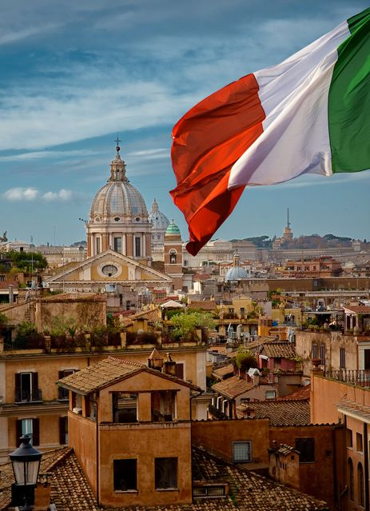

Italia, oficialmente la República Italiana es uno de los veintisiete Estados soberanos que forman la Unión Europea. Su capital y ciudad más poblada es Roma. Aunque casi todo el territorio del país se encuentra en el continente europeo, Italia es un Estado transcontinental, pues a él pertenecen algunas pequeñas islas africanas, próximas a la costa de Túnez. Italia se ubica en el centro del mar Mediterráneo, en Europa meridional. Ocupa la península itálica así como la llanura Padana, las islas de Sicilia y Cerdeña y alrededor de ochocientas islas menores, entre las que se destacan las islas Tremiti en el mar Adriático, los archipiélagos Campano y Toscano en el mar Tirreno, y las islas Pelagias en África septentrional, entre otras. En el norte está rodeada por los Alpes y tiene frontera con Francia, Suiza, Austria y Eslovenia.
